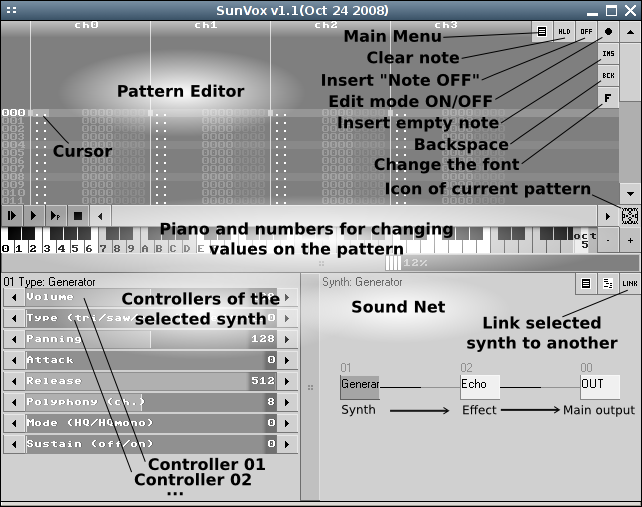
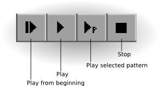

SunVox - Multiplatform Modular Music Creation Studio
User Manual
Introduction to SunVox
Installation and system requirements
Graphical user interface (GUI) description
Keyboard shortcuts
Synthesizers and effects
SunVox song structure
Pattern editor
Configuration file
This manual is not yet complete. But i working on it now. Please send any your comments and issues to nightradio@gmail.com. Thank you for your understanding.
Introduction to SunVox
SunVox is a small, simple, fast and powerful program for music creation. It is based on modular synthesizers and tracker-like interface.
Main SunVox features:
- Modular interface.
- Highly optimized synth algorithmes.
- Flexible architecture: SunVox can working on variuos devices. For example:
PDA with slow CPU - 16bit sound (fixed point arithmetic); or big PC with
powerfull CPU: 32bit sound (floating point arithmetic).
- SunVox engine (without GUI) is open source and distributed under the terms
of BSD license.
- Built-in synthesizers:
- FM synthesizer;
- Generator (saw,triangle,square,noise waveforms);
- Sampler (supported formats: WAV, XI);
- SpectraVoice (FFT-based synth for analog-like pads);
- Kicker;
- Stereo Delay;
- Distortion;
- Echo;
- Filter (Low-pass, High-pass, Band-pass, Notch);
- Flanger;
- LFO;
- Loop;
- Reverb (with DC Blocking Filter).
- Vocal Filter
- Supported platforms: Windows, Linux, PalmOS, WindowsCE.
- Export to WAV.
Examples of SunVox application:
- composing music on pocket computers or netbooks;
- embedding music into games;
- "chip tunes" creation: SunVox tunes can be very small; for example - 30 kBytes (or 2 kBytes after packing by ZIP)
Installation and system requirements
- LINUX
- System requirements:
* Pentium processor or higher;
* 256 mb RAM or higher;
* Any Linux distribution;
* SDL library (version 1.2 or later);
* ALSA.
- Unpack archive with SunVox.
- Run sunvox.
- WINDOWS
- System requirements:
* Pentium processor or higher;
* 256 mb RAM or higher.
- Unpack archive with SunVox.
- Run sunvox.exe
- WINDOWSCE (WINDOWS MOBILE)
- System requirements:
* ARM CPU (200 mHz or higher).
- Copy sunvox.cab to your mobile device.
- Install it.
- Open Windows start menu -> Programs. Click on SunVox.
- PALMOS
- System requirements:
* ARM CPU (200 mHz or higher);
* PalmOS 5.0 or higher.
- Unpack archive with SunVox.
-
- Install sunvox.prc to Palm.
WARNING. SunVox may crash some new devices like Treo 700p. In this case you must install sunvox_for_new_devices.prc instead of sunvox.prc.
FOR T|T, T2 and ZIRE71 USERS: Please, install FHR (Fargo Heap Resizer) before SunVox running. FHR page: http://fanoush.wz.cz/palm/fhr.html
- Copy other files (examples, samples) to the Flash card.
- Run sunvox.
Graphical user interface (GUI) description


Keyboard shortcuts
| Keys: | Description:
|
| SPACE | - record ON/OFF
|
| q,w,e,r,t,y,u,i.... | - playing notes
|
| CAPSLOCK | - note OFF
|
| F1...F8 | - set octave number
|
| TAB | - go to the next channel
|
| SHIFT + TAB | - go to the previous channel
|
| CTRL + X | - cut
|
| CTRL + C | - copy
|
| CTRL + V | - paste
|
| CTRL + A | - select all
|
| CTRL + T | - select track
|
| SHIFT + DELETE | - cut
|
| SHIFT + INSERT | - paste
|
| SHIFT + '+' | - transpose selected area up
|
| SHIFT + '-' | - transpose selected area down
|
| SHIFT + UP/DOWN/LEFT/RIGHT | - selection
|
| SHIFT + MOUSE MOVING | - synth link/unlink
|
| CTRL + O | - load song
|
| CTRL + S | - save song
|
| CTRL + B | - save song to BACKUP.sunvox
|
Synthesizers and effects
Some synthesizers has the "Mode" parameter with following possible values:
| 00. HQ | - High Quality (stereo). Linear interpolation
|
| 01. HQmono | - High Quality (mono). Linear interpolation
|
| 02. LQ | - Low Quality (stereo) for devices with slow CPU
|
| 03. LQmono | - Low Quality (mono) for devices with slow CPU
|
| 04. Cubic | - High Quality (stereo). Cubic interpolation
|
FM Synthesizer
This synthesizer is based on frequency modulation. It working on internal sampling frequency: 44100 Hz.
Abbreviations: C - carrier; M - modulator.
Controllers:
- C.Volume - carrier volume;
- M.Volume - modulator volume;
- Panning;
- C.Freq mul - carrier frequency multiplier;
- M.Freq mul - modulator frequency multiplier;
- M.Feedback - modulator feedback;
- C.Attack - carrier attack;
- C.Decay - carrier decay;
- C.Sustain - carrier sustain;
- C.Release - carrier release;
- M.Attack - modulator attack;
- M.Decay - modulator decay;
- M.Sustain - modulator sustain;
- M.Release - modulator release;
- Polyphony - how many notes synthesizer can sound at one time;
- Mode:
- 00 - High Quality. Stereo. Linear interpolation of envelopes;
- 01 - High Quality. Mono. Linear interpolation of envelopes;
- 02 - Low Quality. Stereo. No interpolation;
- 03 - Low Quality. Mono. No interpolation.
Generator
This synthesizer is for different waveforms generation.
Available local controllers: Type; Pan.
Controllers:
- Volume;
- Type - type of waveform:
- 00 - triangle;
- 01 - rectangle;
- 02 - white noise;
- 03 - "dirty" wave;
- Panning;
- Attack;
- Release;
- Polyphony - how many notes synthesizer can sound at one time;
- Mode: HQ/HQmono;
- Sustain: 00 - OFF; 01 - ON.
Sampler
Supported file formats: WAV, XI.
Available local controllers: Pan.
Controllers:
- Volume;
- Panning;
- Sample interpolation: 00 - OFF; 01 - Linear;
- Volume interpolation: 00 - OFF; 01 - Linear;
- Polyphony - how many notes synthesizer can sound at one time.
SpectraVoice
This synthesizer is based on FFT and can be used for sound generation with different form of spectrum.
Minimal internal sample size: 4096 words. Maximal: 65536 words
Available local controllers: Pan.
Controllers:
- Volume;
- Panning;
- Attack;
- Release;
- Polyphony - how many notes synthesizer can sound at one time;
- Mode: HQ/HQmono/LQ/LQmono/Cubic;
- Sustain: 00 - OFF; 01 - ON;
- Sample size:
- 00 - 4096 words;
- 01 - 8192 words;
- 02 - 16384 words;
- 03 - 32768 words;
- 04 - 65536 words;
- Harmonic - number of harmonic (00 - 15);
- h.freq - harmonic's frequency;
- h.volume - harmonic's amplitude;
- h.bandwidth - harmonic's bandwidth;
- h.bandtype - harmonic's bandtype:
- 00 - half of sinus;
- 01 - square;
- 02 - organ ver.1;
- 03 - organ ver.2;
- 04 - organ ver.3;
- 05 - organ ver.4;
- 06 - sinus.
Kicker
Available local controllers: Type.
Controllers:
- Volume;
- Type - type of waveform: 00 - triangle; 01 - square;
- Panning;
- Attack;
- Release;
- Vol. Add - additional volume;
- Env. Accel - volume&frequency envelope acceleration;
- Polyphony - how many notes synthesizer can sound at one time;
- Anticlick: 00 - OFF; 01 - ON.
Delay
Maximal delay is 1/64 second.
Controllers:
- Dry - amount of original signal in output;
- Wet - amount of delayed signal in output;
- Delay L - delay length on the left channel; maximal delay - 1/64 second;
- Delay R - delay length on the right channel; maximal delay - 1/64 second;
- Volume L - volume of the left channel;
- Volume R - volume of the right channel;
- Mono: 00 - stereo delay; 01 - mono delay;
- Inverse amplitude: 00 - OFF; 01 - ON.
Distortion (and amplifier)
Controllers:
- Volume;
- Type - type of distortion: 00 - limitation; 01 - saturation;
- Power;
- Bitrate: 1..16;
- Frequency: maximum = 44100 Hz (8000 in hex in pattern editor).
Echo
Maximal delay is one second.
Controllers:
- Dry - amount of original signal in output;
- Wet - amount of signal with echo in output;
- Feedback;
- Delay - delay length; maximal delay - one second;
- Stereo: 00 - mono; 01 - stereo.
Filter
State Variable Filter (Chamberlin version). Double Sampled.
Controllers:
- Volume;
- Frequency: maximum = 14000 Hz (8000 in hex in pattern editor);
- Resonance;
- Type:
- 00 - lowpass;
- 01 - highpass;
- 02 - bandpass;
- 03 - notch;
- Response - speed of changing the frequency, resonance and volume;
- Mode:
- 00 - double sampled stereo;
- 01 - double sampled mono;
- 02 - low quality stereo;
- 03 - low quality mono;
- Impulse - frequency, that will be set immediately; after setting frequency will return to its previous value smoothly (according to value of the "Response" controller);
- Mix: minimal value - output=input; maximal value - output=filtered input.
Vocal Filter
This filter was designed to simulate the vocal tract of a human.
Controllers:
- Volume;
- Bandwidth - bandwidth of formants;
- Amp. add - additional value for amplitude of formants;
- Formants - number of voice formants; maximum = 5 (best result);
- Vowel: A...E...I...O...U (minimal value - A; maximal - U);
- Character:
- 00 - soprano;
- 01 - alto;
- 02 - tenor;
- 03 - bass;
- Mono: 00 - Stereo; 01 - Mono.
LFO
LFO - Low Frequency Oscillation.
Controllers:
- Volume;
- Type: 00 - amplitude modulation (tremolo); 01 - stereo panning modulation;
- Power;
- Frequency;
- Shape: 00 - sinus; 01 - square;
- Set phase.
Loop
This effect is for repeating small pieces of input sound.
Controllers:
- Volume;
- Delay;
- Stereo: 00 - mono; 01 - stereo;
- Repeats - number of repeats in the loop.
Reverb
Reverberator and DC Blocking Filter.
Controllers:
- Dry - amount of original signal in output;
- Wet - amount of reverberation in output;
- Feedback;
- Damp;
- Width;
- Freeze: 00 - none; 01 - freeze mode;
- Mode.
SunVox song structure

Several words about the hex numbers.
In mathematics and computer science, hexadecimal (also base-16, hexa, or hex) is a numeral system with a radix, or base, of 16. It uses sixteen distinct symbols, most often the symbols 0–9 to represent values zero to nine, and A, B, C, D, E, F (or a through f) to represent values ten to fifteen.
Hexadecimal (hex) numbers:
00, 01, 02, 03, 04, 05, 06, 07, 08, 09, 0A, 0B, 0C, 0D, 0E, 0F, 10, 11, 12, 13 ... FF
and their decimal equivalents:
00, 01, 02, 03, 04, 05, 06, 07, 08, 09, 10, 11, 12, 13, 14, 15, 16, 17, 18, 19 ... 255
Pattern editor
Any pattern in the SunVox looks like this:
| line | ch0 (channel 0) | ch1 (channel 1) | ch2 (channel 2) | ...
|
| 000 | event | event | event |
|
| 001 | event | event | event |
|
| xxx | ... | ... | ... |
|
event - some music event (something like a MIDI command).
Examples of events:
| * event of turning note C5 on: | C5 80 01 0000 0000
|
| * event of turning note A5 on: | A5 80 01 0000 0000
|
| * event of turning note off: | ==
|
As you can see, event contain several text/numeric fields.
Event format: NN VV SS CCEE PPPP
Lets see detailed description of each field in the event:
- NN - note
- VV - velocity (00..80)
- SS - synth number (00,01,02,03,04,05,06,07,08,09, ... FF)
- CC - number of controller (01,02,03,04, ... FF)
- EE - standart effect:
- 01 - slide up (portamento up)
- 02 - slide down (portamento down)
- 03 - slide to note (sliding speed = PPPP)
- 0A - slide velocity up/down (PPPP = UUDD; UU - up speed; DD - down speed)
- 0F - set playing speed
- PPPP - parameter of a selected effect/controller (0000 - min; 8000 - max)
Velocity can be changed dynamically.
Example:
NN VV SS CCEE PPPP
C3 10 03 0000 0000
-- 20 -- 0000 0000
-- 30 -- 0000 0000
-- 40 -- 0000 0000
-- 50 -- 0000 0000
-- 60 -- 0000 0000
In this example velocity changed from 10 to 60.
Example of changing cutoff frequency (global controller) of filter from min to max value:
NN VV SS CCEE PPPP
-- -- 01 0200 0000
-- -- 01 0200 1000
-- -- 01 0200 2000
-- -- 01 0200 3000
-- -- 01 0200 4000
-- -- 01 0200 5000
-- -- 01 0200 6000
-- -- 01 0200 7000
-- -- 01 0200 8000
Cutoff frequency controller has number 2 in the filter.
Some synths has local controllers.
Local controller can be changed for separate sound on a separate channel.
Example: (changing local controller 2 in synth 1)
NN VV SS CCEE PPPP
C3 80 01 0200 0000 //Set local controller 2 to value 0000. Separate sound begins playing here
-- -- 01 0200 0001 //Set local controller 2 to value 0001
-- -- 01 0200 0002 //Set local controller 2 to value 0002
-- -- 01 0200 0003 //Set local controller 2 to value 0003
-- -- 01 0200 0002 //...
-- -- 01 0200 0001
Configuration file (sunvox_config.ini)
This file must be placed in the same folder with SunVox (for Linux/Windows) or in the root of filesystem (for WinCE devices).
Typical sunvox_config.ini file looks like this:
//----------------------------------------------------------------------------
width 640 //Screen width
height 480 //Screen height
fullscreen //Set it, if you want fullscreen mode in Linux (SDL)
buffer 4096 //Sound buffer size (in samples)
audiodevice "hw:0,0" //ALSA audio device name in Linux
frequency 44100 //Sampling frequency (minimum - 44100)
noborder //Set it, if you want a window without border
//----------------------------------------------------------------------------
WARNING: Sound may differ slightly on different sampling frequencies